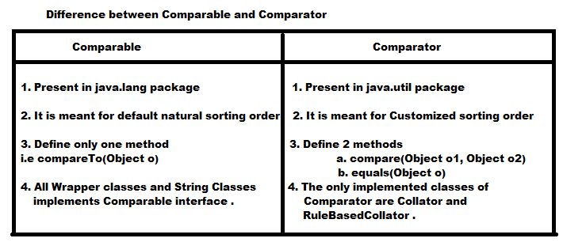

Comparator interface :
- This interface present in java.util package
- It contains two methods .
- public int compare(Object obj1, Object obj2)
- returns +ve , if obj1 has to come after obj2
- returns -ve , if obj1 has to come before obj2
- retruns 0 , if obj1 and obj2 are equal
- public boolean equals(Object obj)
- Whenever we are implementing Comparator interface we have to provide implementation only for compare() method and implementing equals(-) method is optional because it is already available for every class from Object class through inheritance .
- Note: If we are depending upon default natural sorting order compulsory objects should be homogeneous and Comparable . Otherwise we will get runtime Exception saying ClassCastException . If we are defining our own sorting by Comparator then Objects need not be homogeneous and Comparable i.e , we can add heterogeneous non-comparable object also .
Comparable Vs Comparator :
- For predefined Comparable classes (like String), Default natural sorting order is already available . If we are not satisfied with that we can define our own sorting by Comparator object .
- For predefined non-comparable classes (like StringBuffer), Default natural sorting order is not already available . If we want to define our own sorting then we can use Comparator Object .
